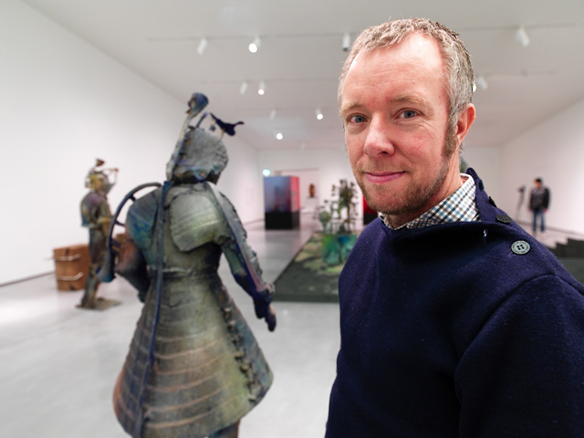

The LAM is a museum on the Keukenhof estate. The Keukenhof castle is also close to the museum
Enjoy the amazing feeling of going back into the past in the LAM museum surrounded by the beautiful artworks of Folkert de Jong.
Statues, paintings, different artworks? We got them all!
Don’t believe us? See for yourself in our beautiful VR experience right below.
This program down below is a WebXR, a VR experience you might call it. Made for everyone to see a little bit of the museum from their phone or computer for free. We hope you will enjoy this.
-Team Steve
CONTROLS:
W,A,S,D to move
Left mouse button to move the view around and to interact with objects
About the artist: Folkert de Jong

Folkert de Jong is a Dutch sculptor and artist, born in Amsterdam (Egmond aan zee) and still lives/works there. As you can see his work consists of life size artworks and more. All of his works are heavily pointed towards the past and most of the times they all have an important hidden meaning behind them.
De Jong was educated at the Amsterdam School of the Arts (1994-1996) and the Rijksakademie van Beeldende Kunsten in Amsterdam (1998-2000).
Folkert's work often alternates between colorful and cheerful and gruesome or dark, he himself likes the second one more. All his work can be found in this museum.